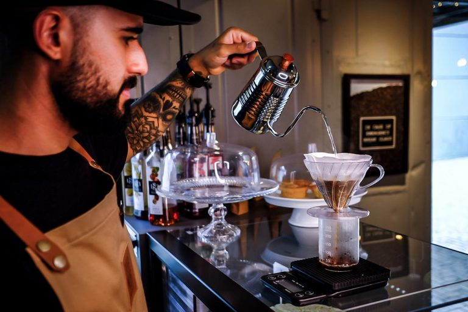

| Ambiente |
I |
 |
II |
 |
III |
 |
IV |
 |
|
I :Representa um pouco de como é o ambiente dentro da cafeteria
II :HARIO V60
III :KALITA WAVE
IV :Café limpo, sem resíduos e que |
Site desenvolvido por samuel - todos os direitos reservados - 2022